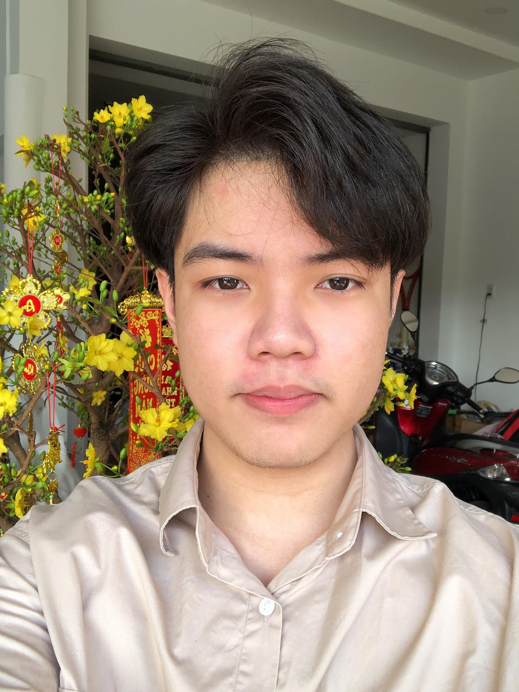

Thach Pham

Summary
I am a hardworking and a Full Stack Developer with a broad skill set encompassing both front-end and back-end technologies.
Education
Work experience
Skills
- Technical Skills
- Programming language: HTML, CSS, Java, Python, C++.
- Framework: ReactJs, FastAPI.
- Tools: Jira, Confluence, Github.
- Language: English
- Social Skills
- Active Listening, Problem-solving, Critical thinking, Patience
Awards and Certifications
- SCRUM - Agile host at Axon Active
- TOEIC 760 (Listening and Reading taken in May 2023).
Other